開始前你需要：一個 Google 帳號、幾分鐘時間、還有這份庫存管理系統模板的網頁打開在另一個分頁。整個過程不需要寫任何程式碼，全部用滑鼠點選跟複製貼上就能完成。
1
建立 Firebase 專案
- 前往 console.firebase.google.com，用 Google 帳號登入
- 點「新增專案」，輸入專案名稱（例如：我的庫存系統）
- Google Analytics 選「不啟用」即可，跟這個系統的功能完全無關
- 按「建立專案」，等待幾秒後會進入專案主控台
💡 專案名稱可以隨便取，之後看得懂就好，跟你的商店名稱、網址都沒有關係。
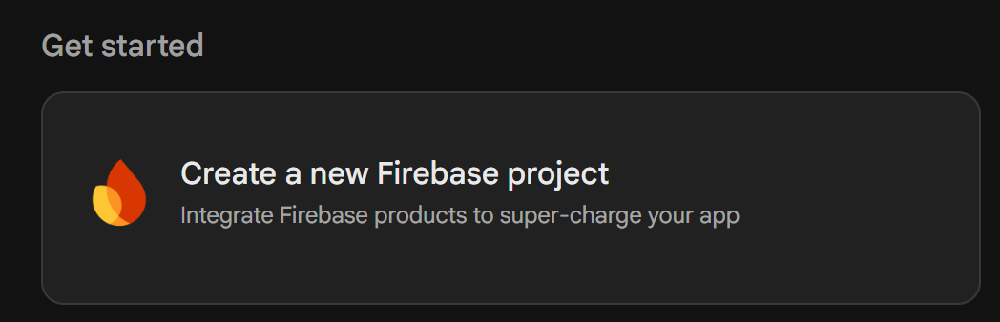
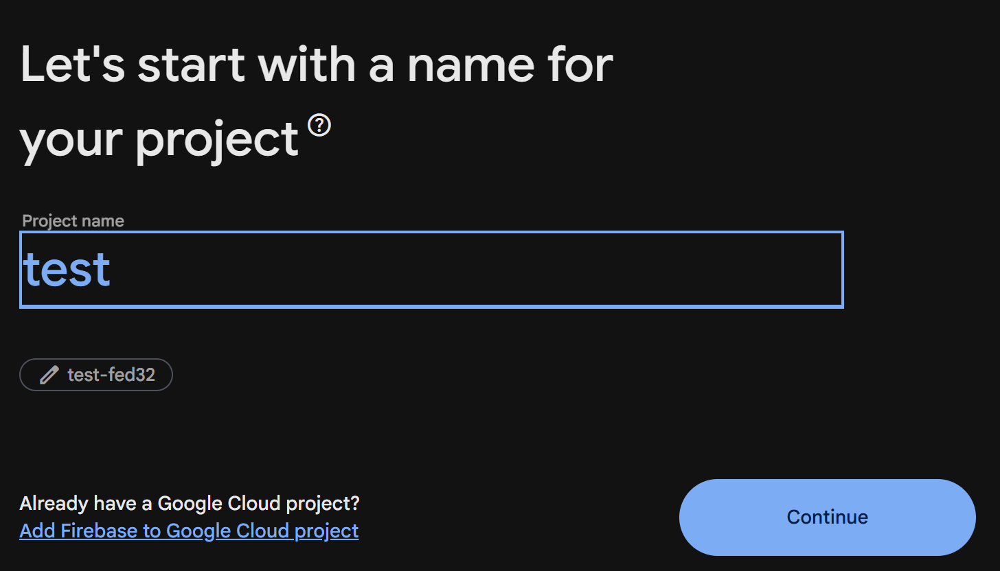


2
開啟 Firestore Database
- 左側選單點「Firestore Database」
- 點「建立資料庫」
- 位置選離你最近的機房（asia-east1 台灣，或 asia-northeast1 東京都可以）
- 安全性規則先選「測試模式」——這樣才能先確認功能正常，第 6 步再改成正式規則
⚠️ 測試模式代表「任何人都能讀寫」，只是暫時的，記得回來做第 6 步。
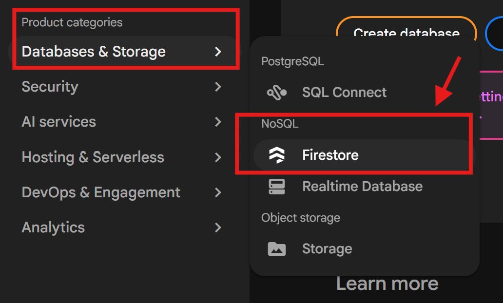
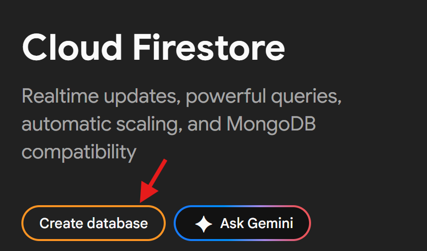
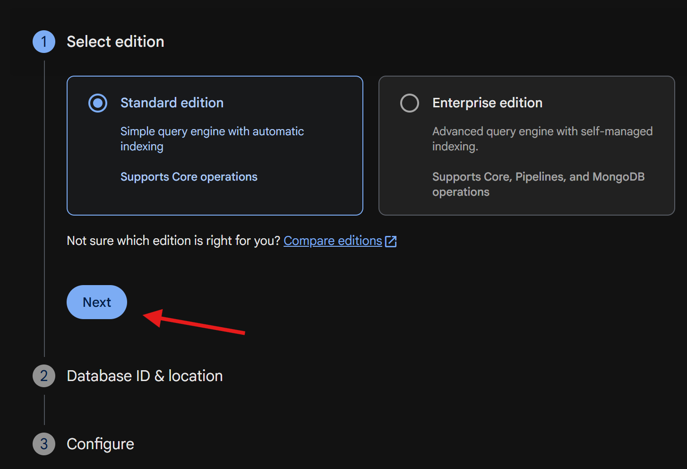
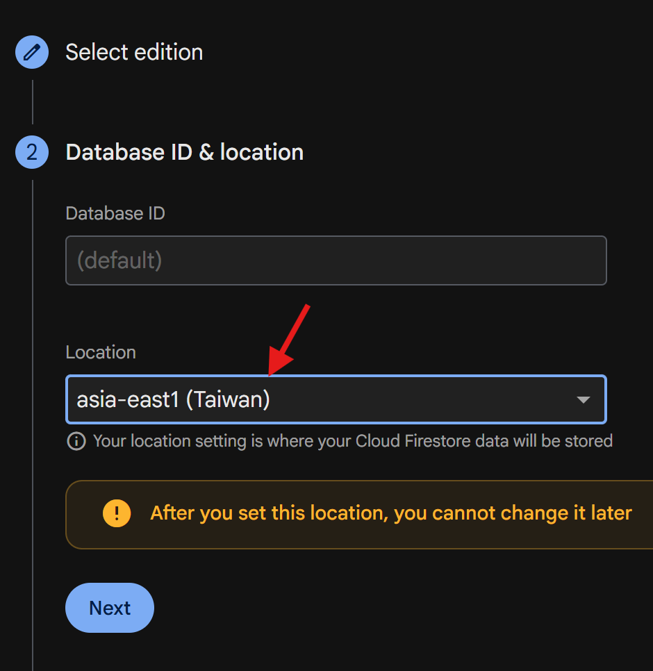
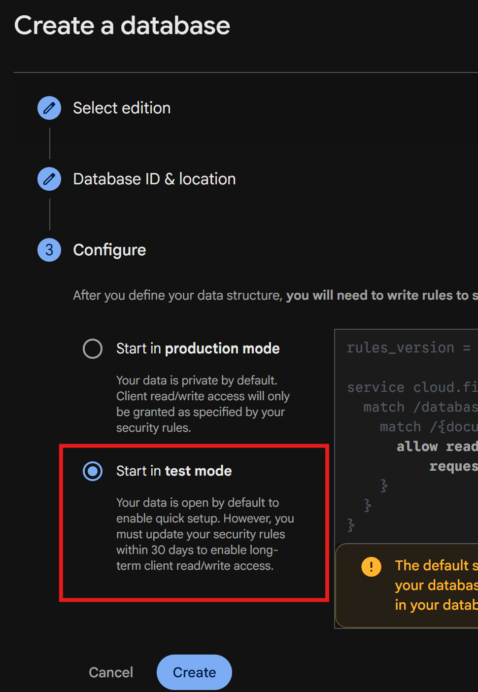

3
開啟「匿名」登入
這一步讓每台裝置能自動、安全地讀寫資料，不需要員工另外註冊帳號密碼。
- 左側選單點「Authentication」
- 點「開始使用」（或「Sign-in method」分頁）
- 在登入方式清單裡找到「匿名」，點進去選「啟用」，按儲存
💡 「自動清理」那個選項可以勾選，會自動清掉超過 30 天沒用的匿名帳號，對這個系統沒有壞處。
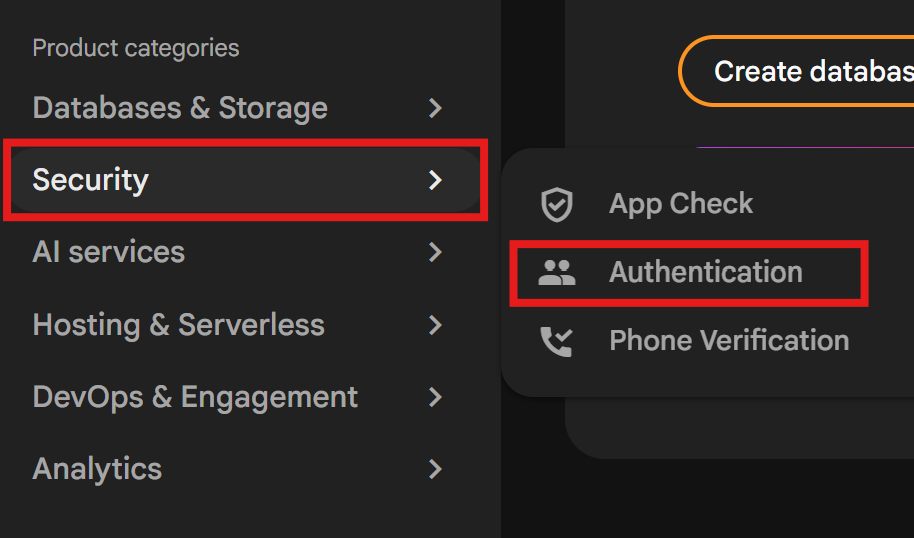
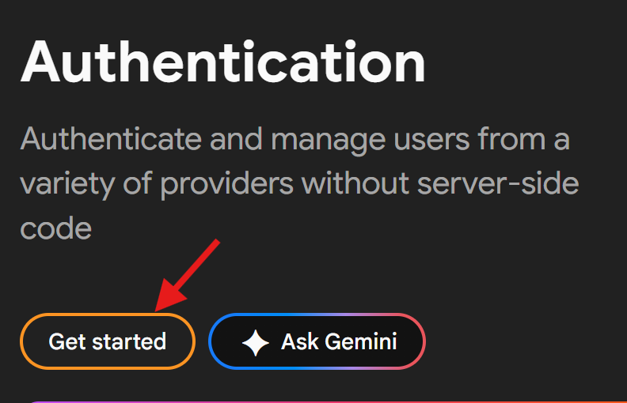

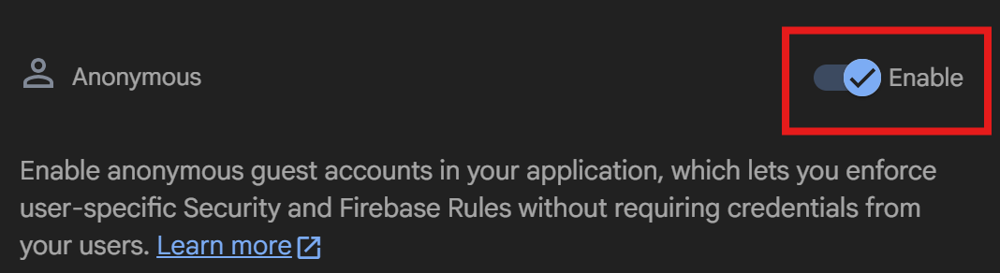


4
取得六個連線設定值
- 主控台左上角齒輪圖示 →「專案設定」
- 往下捲到「你的應用程式」，點 </> 新增網頁應用程式（名稱隨意）
- 選擇「使用
<script>標記」（不要選 npm） - 畫面會顯示一段程式碼，裡面的
firebaseConfig就是你要的六個值
const firebaseConfig = {
apiKey: "AIzaSyD-xxxxxxxxxxxxxxxxxxxxxxxxxxxxx",
authDomain: "my-project-12345.firebaseapp.com",
projectId: "my-project-12345",
storageBucket: "my-project-12345.appspot.com",
messagingSenderId: "123456789012",
appId: "1:123456789012:web:a1b2c3d4e5f6g7h8"
};
| 欄位 | 這是什麼 |
|---|---|
| apiKey | 對外溝通用的識別金鑰（不是密碼） |
| authDomain | 登入功能使用的網域，固定格式 |
| projectId | 你這個專案的唯一 ID |
| storageBucket | 檔案儲存位置（這個模板沒用到，照抄即可） |
| messagingSenderId | 推播用的編號（這個模板沒用到，照抄即可） |
| appId | 這個網頁應用程式的唯一識別碼 |
⚠️ 複製時只拿雙引號「裡面」的內容，不要把引號本身也複製進去。
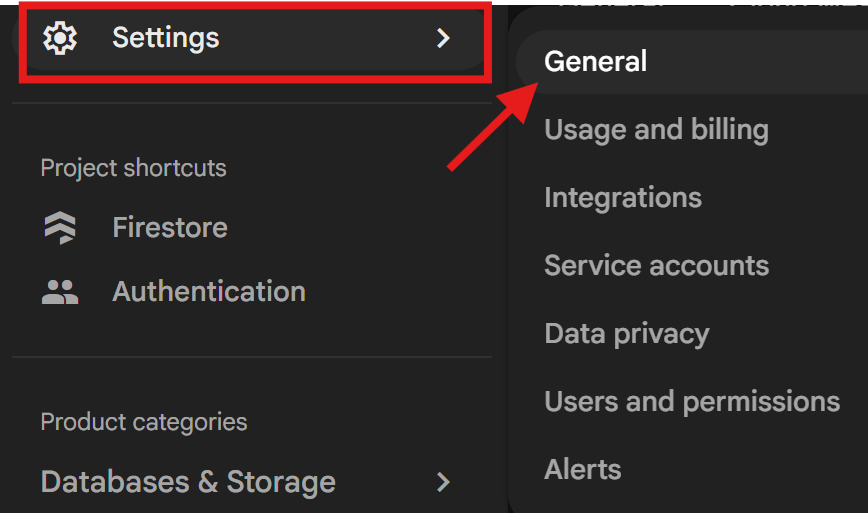
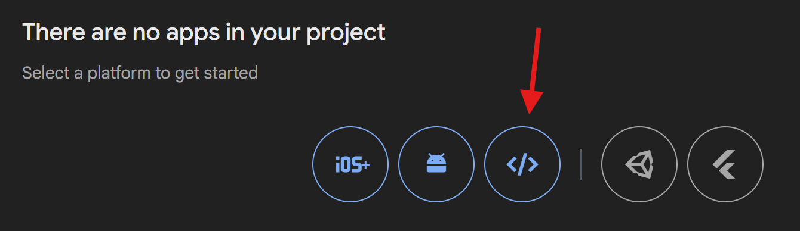
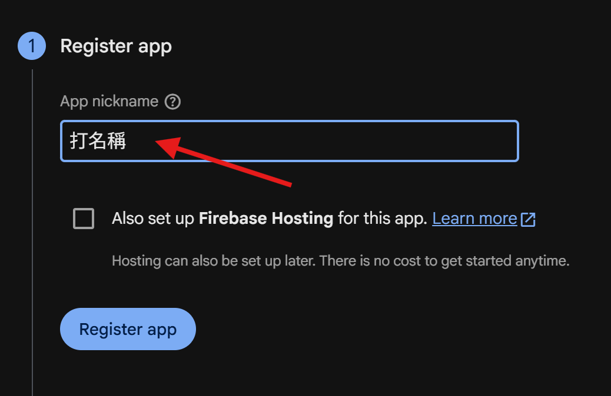
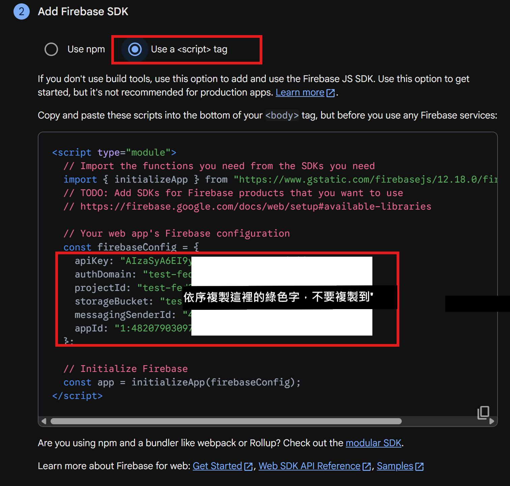


5
貼進模板的「設定」頁
回到你的庫存管理系統模板網頁，這一步完全不用碰程式碼：
- 切到「設定」分頁，找到「連接我的 Firebase」區塊
- 把上一步的六個值，依欄位名稱逐一貼上（apiKey、authDomain、projectId、storageBucket、messagingSenderId、appId）
- 按下「連接並啟用雲端同步」
- 上方狀態文字如果變成「已連接，雲端同步中」，就代表成功了
💡 六個值貼好之後，這個區塊之後會自動收合成一行摘要，不會一直佔畫面。
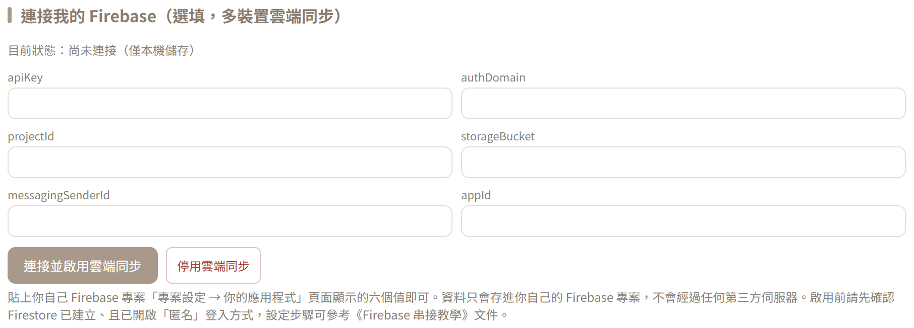
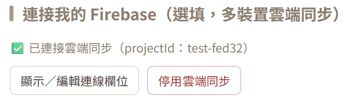


6
把安全規則換成正式版
在測試多裝置同步之前，先把第 2 步的「測試模式」換成正式規則——如果規則設定錯誤（例如不小心選到完全鎖住讀寫的模式），下一步測試同步時就會失敗，畫面看起來會像是登入失敗、看不到任何資料，其實是規則擋住的。
- 回到 Firestore Database →「規則」分頁
- 把整段規則換成下面這段：
rules_version = '2';
service cloud.firestore {
match /databases/{database}/documents {
match /{document=**} {
allow read, write: if request.auth != null;
}
}
}
- 按右上角「發布」，等幾秒生效
- 回到模板重新整理，確認資料還能正常讀寫（因為你已經有匿名登入，不受影響）
⚠️ 如果建立資料庫時不小心選到「正式／鎖定模式」，規則預設會是
allow read, write: if false;——代表所有人（包含你自己）都讀寫不了，狀態會顯示「連接失敗：Missing or insufficient permissions」。不管你當初選了測試模式還是鎖定模式，把規則整段換成上面這段就對了。這段規則的意思是「只有登入過的人（含匿名登入）能讀寫」，比測試模式安全很多，但仍然只要知道連線設定值就能存取——請不要把六個值隨便外流。
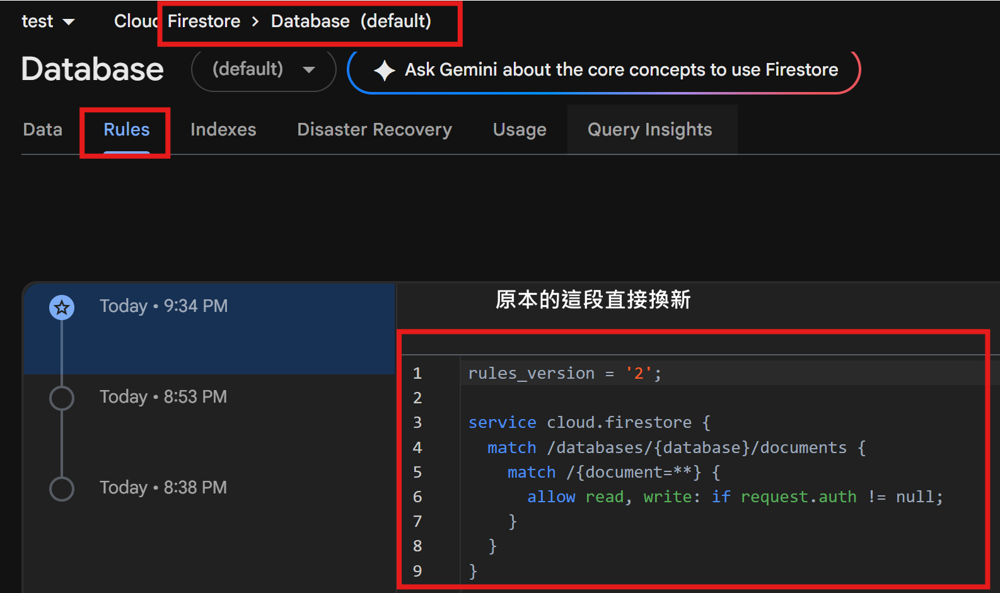


7
測試多裝置同步
- 用手機或另一台電腦打開同一個模板網址
- 一樣到「設定」貼上同一組六個值，按連接
- 在其中一邊新增一筆商品或紀錄
- 幾秒內另一邊應該會自動更新出現同一筆資料
如果想確認資料真的有存到雲端，可以到 Firebase 主控台的 Firestore Database 頁面，應該會看到一個叫
inventory_template_data 的集合，裡面有一份 main 文件。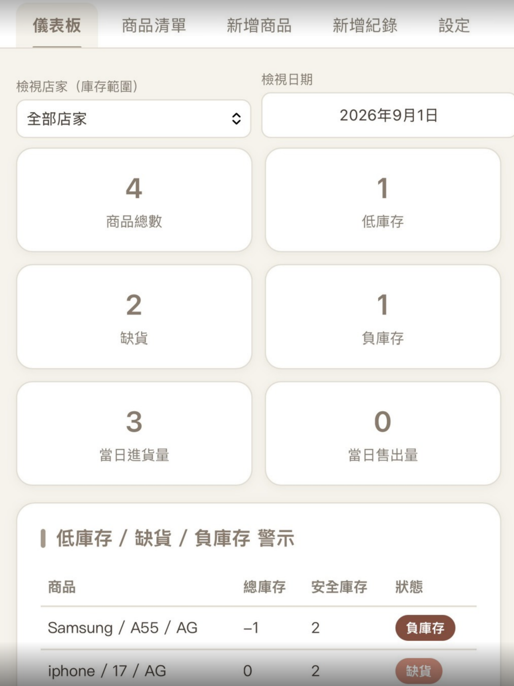


8
（選填）加一層畫面保護
如果不想讓一般員工不小心誤觸雲端連線設定，可以在模板「設定」頁最上面設定一組「管理密碼」：
- 找到「管理密碼」區塊，輸入一組密碼並儲存
- 設定後，「連接我的 Firebase」跟「清除所有資料」兩個區塊會先隱藏，需要輸入密碼才能查看
提醒：這只是畫面層級的簡易防呆，不是真正的帳號登入系統，密碼是存在裝置本機的。
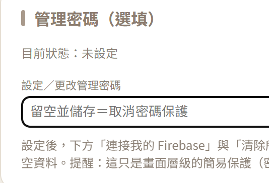


✓
完成檢查清單
- Firebase 專案已建立
- Firestore 資料庫已建立
- Authentication 的「匿名」已啟用
- 六個設定值已貼進模板「設定」頁並顯示連接成功
- 安全規則已從測試模式換成正式規則並發布
- 多裝置測試過會自動同步